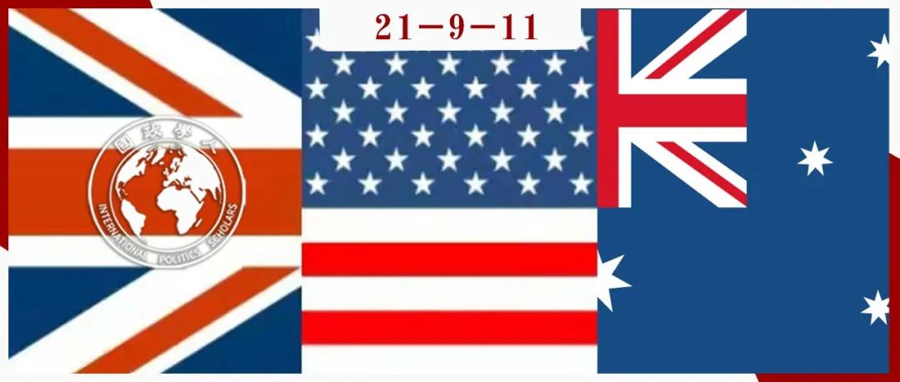

收录于合集

作品简介
作者： David M McCourt，加利福尼亚大学戴维斯分校副教授，主要研究兴趣为国际政治中国家行为的社会根源，聚焦于英国、美国和欧盟。他也对社会学和国际理论感兴趣。
编译： 朱忻博（国政学人编译员，爱丁堡大学国际关系硕士）
来源：
****McCourt, D.M. (2021). Framing China’s rise in the United States, Australia and the United Kingdom. International Affairs (London) , 97(3), 643–665.https://doi.org/10.1093/ia/iiab009
归档： 《国际关系前沿》2021年第9期，总第36期。

内容提要
近年来，美国、澳大利亚和英国对中国崛起的乐观态度已经让位于深切的担忧。根据对各国中国问题专家的原始访谈，以及一系列一手和二手资料，本文指出，应对中国崛起框架的变化反映了美国、澳大利亚和英国国家安全领域的动态。文章特别强调了三点：首先， 美国认为中国的崛起是可以被遏制或阻止的，而澳大利亚和英国则不这样认为。 本文认为这种动态植根于职业聘任制和美国激烈的“思想市场”，这导致了激烈的框架竞争和偶尔急剧的框架变化。接下来文章指出不同领域处于关键职位的行为体形塑了对中国及其意义的不同诠释。特朗普这个强烈的中国批评者当选美国总统，使美国对中国的主导框架从（中国是）潜在挑战者变为（中国是）当前的威胁。在澳大利亚和英国较小且更集中的领域里，怀疑中国的声音更少、更小，因此， 尽管两国与中国的外交关系都在恶化，但两国的反应基本上都是务实的。
01
引言
随着中国实力的崛起，越来越多的西方国家对中国崛起采取了更加强硬的解读，中国与西方国家的关系也日益恶化。 本文试图解释西方国家对中国框架转变这一趋势中三个关键的案例——美国、澳大利亚和英国。 在这三个案例中，乐观情绪都让位给了担忧，但以不同的方式。
美国对中国崛起的框架已经从为了经济机会“接触”（engaged）中国转向视中国为一个挑战“美国权力、影响力和利益”的威胁，这使美国陷入了“战略竞争”。澳大利亚的框架也遵循了类似的轨迹，从与中国接触到“抵制”（standing up）中国。英国既没有拒绝合作，也没有采取明确的竞争，但长期存在的经济机会框架正日益受到国家安全框架的挑战。
本文运用 社会学的场域理论（field theory） ，将应对中国的不同框架与美国、澳大利亚和英国国家安全领域的动态联系起来。力图探究特定领域的相应结构如何促进个体生成与中国有关的某些观点和倾向。根据对中国问题专家的一组原始采访(共132人)，以及一系列一手和二手资料，本文 对美国、澳大利亚和英国的国家安全领域进行了描述性比较，并追踪它们对三国应对中国崛起框架的影响。 通过着重阐述对中国崛起转向强硬回应过程的三个重要案例，本文为研究中国崛起提供了一个独特的视角。
02
美国、澳大利亚和英国应对中国崛起的 框架
1. 从接触到战略竞争
**
**
1972年尼克松访华以来，历届美国政府都希望“接触”（engagement）能够引导中国成为国际社会“负责任的利益攸关方”，直到2016年11月特朗普当选之前，“接触”仍然是对华的首要框架。特朗普组建了一个拒绝“接触”政策的对华团队。
然而，拒绝接触包含了一些不同的经济、军事和意识形态理由，这在特朗普的对华政策立场中造成了紧张。在经济领域，对贸易战影响的担忧加剧了以安全为导向的美国贸易代表莱特希泽同以市场为重点的财政部长姆努钦之间的紧张关系。在军事安全领域，美国2017-2018年的国家安全事务助理麦克马斯特将“战略竞争”提升到了对华框架的主体地位。同特朗普关系紧密的一些人，如班农，视美中关系为“文明的冲突”，这表明他们持有更广泛的意识形态观点。因此，双方之间产生了进一步的紧张关系：一方面批评试图改变中国的“接触”政策，另一方面又日益认为共产党是美国面临的问题的关键，而政权更迭似乎是唯一可接受的结果。
抛开这种紧张关系不谈，新冠肺炎疫情进一步恶化了美中关系，巩固了战略竞争框架。虽然可能算不上“共识”，但对中国的深切担忧是美国罕见的两党合作议题。因此，恢复接触的可能性远远小于紧张局势的延长，甚至小于“新冷战”。
2.抵制中国
**
**
虽说澳大利亚同中国的关系也有相似的经历，1972年两国建交时建立的合作框架结束了，中澳关系迅速下降，但澳大利亚对华框架转变的时间和性质不同于美国的类似现象。
澳大利亚与中国的交往是由两国独特的互补性经济的巨大潜力所支撑的——澳大利亚提供原材料、金融服务和高等教育，而中国则提供制成品。澳大利亚可以在中国和美国之间“对冲”的观点也支持了这一接触框架。2012年出台的《亚洲世纪的澳大利亚》白皮书标志了接触框架的顶峰。
2016年和2017年，在马尔科姆·特恩布尔（Malcolm Turnbull）的领导下，随着精英和公众改变了对中国的看法，观点开始发生显著变化。2017年底，特恩布尔政府推出了一套由四部分组成的国家安全和外国干预法，旨在防止包括中国在内的威权国家的干涉。澳大利亚战略反应的核心是对“印度- 太平洋”概念的突出，为通过“四方安全对话”（Quad）以及“五眼”情报联盟加强与美国、印度和日本的防务和安全关系提供了理由。
不过澳大利亚对中国的“现实核查”（在美国的支持下与北京对抗），与希望避免被视为美国的意识形态十字军之间也存在紧张关系。澳大利亚的对华框架仍是务实的，澳大利亚总理斯科特·莫里森（Scott Morrison）最近的讲话就是一个例证，他坚定地将澳大利亚战略置于印度-太平洋框架内，而不是特朗普政府推行的威胁框架内。
3.寻找一个框架？
**
**
英国是正在将对华观点转向强硬的另一个例子，其与美国和澳大利亚相关，但有所不同。就像澳大利亚，英国的转向并不是一个急剧的框架转变，而是如何在解决双边关系中的棘手问题的同时保持改善关系的希望。
与澳大利亚一样，英国与中国的接触也以经济机会为中心，在2010-2016年大卫·卡梅伦政府时期达到顶峰。基于其在内政事务方面的背景以及与安全部门的关系，卡梅伦的继任者特蕾莎·梅就不那么乐观了，即便如此，伦敦的乐观情绪仍比华盛顿或堪培拉持续得更久。但过去两年发生的一些事件一定程度上放大了对中国持怀疑态度的声音，对战略过度依赖中国的担忧使得英国两党都主张采取更强硬的路线。
在一定程度上，英国脱欧的余波可以解释英国对华框架的时间选择。一方面，英国脱欧“完全从政治议程上抹去了其他一切”；同时，英国脱欧后寻求在世界舞台上扮演一个新的“全球英国”角色。这为英国提供了两个截然不同的对华政策选择:与中国接触或者对抗中国。后一种想法有一些重要的支持者，包括前工党外交大臣戴维·欧文和前保守党领袖伊恩·邓肯·史密斯，他们的观点得到了来自堪培拉和华盛顿的声音的支持，他们都在推动英国采取更强硬的立场。随着事态的迅速发展，各主要党派内部和各党派之间的威胁框架有可能日益突出。然而，就目前而言，英国官方的观点仍是务实的，类似澳大利亚的务实抵制，英国保持合作的大门敞开。
03
中 国崛起与美国、澳大利亚和英国的国家安全领域
1.美国、澳大利亚和英国的国家安全领域和中国
**
**
美国 国家 安全领域同澳大利亚和英国的第一个显著区别在于，对后两者来说，中国的崛起是21世纪世界政治一个不可避免的特性，而中国崛起对美国来说只是一个假定，一个时刻表，需要美国的正确回应。 这种差异的核心在于权力水平不同的问题——美国可以简单地比澳大利亚或英国做得更多。美国国家安全领域在规模和强度上都是无与伦比的，而在澳大利亚和英国，国家安全领域规模较小，地理上不那么集中，关于外交政策的辩论也不那么激烈。
但美国政府的一个核心特征是对决策职位的政治任命制度，这造成了美国国家安全领域的一个标志性现象：随着下届政府引入新的方法和能量，在某些问题、国家或地区（如中国）上，政策在接触与强硬之间出现（通常相当大的）摇摆。然而，外交政策态度往往超越党派分歧，这一倾向反映了政府内外“旋转门”的更广泛动态。在澳大利亚和英国，由于两国的政府、大学、企业和智库之间有更大的分离，同样的情况没有发生。澳大利亚和英国各自国家安全领域负责中国的部门反映了这种分离。它们的一个突出特点是独特的中国专业知识的优势：如澳大利亚的媒体人和英国的政治风险顾问和公司顾问。
2.“接触”框架在美国、澳大利亚和英国的结束
特朗普的当选将一种在国家安全领域某些部分越来越受欢迎的对华观点带入了美国政策的中心：接触是失败的，需要一个新的框架来让中国服从美国的全球霸权。框架的重塑得到了国会保守派议员、评论家和专家的支持和启发，框架的转变也受反对声音的削弱推动。除了共和党右翼，对接触政策的批评来自得到国会主要民主党人的大力支持的人权组织，还来自前政府官员和国家安全领域中通常支持接触政策的部分。即使是那些呼吁对中国采取更克制政策的人，也必须承认中国的行为令美国深感不安。
澳大利亚的国家安全领域有一套不同的立场，在形成对中国框架的形式和时机上也与美国产生了对比。澳大利亚对华更强硬的观点并非来自政府更迭，而是来自政府内部——前总理马尔科姆·特恩布尔以及一小群部长和顾问。媒体在澳大利亚安全领域有着重要作用，其对华政策转变部分是出于对一份关于中国国内干预的机密报告的回应。澳大利亚媒体将中国定义为澳大利亚的一个问题，无论是在地缘政治还是在澳大利亚的社会方面——这些特征在美国将中国定义为对美国霸权和自由的威胁的框架中基本不存在。
然而，就像在美国一样，澳大利亚政府主导的修辞变化导致了国家安全领域以及更广泛的公众辩论中对华立场的选择。担心两国关系恶化的人主要分两派：一派是商业团体，澳大利亚的企业及其主要协会寻求游说个别部长，并在辩论中突出贸易的互利性；另一派的诉求不只是中澳关系的反映，还反映了对美国影响澳大利亚政治的深度不信任，他们担忧澳大利亚成为蓬佩奥等人宣扬的帝国主义的代理人。特恩布尔更强硬路线的支持者也存在分歧：一边是一个跨党派的议员团体，他们自称为“狼獾”（Wolverines），自认为是中国的反对者和美国的支持者；另一边主要是智库和学者，他们寻求在“红色诱饵”和对中国不可持续的乐观情绪之间保持微妙的平衡。与美国不同，澳大利亚的辩论是“国家不可知论”（country- agnostic）的：其措施“旨在适用于任何国家的不当行为，无论是中国、俄罗斯还是美国”。
英国国家安全领域没有复制美国的那种中国立场，因此也没有范式性的框架改变。英国持有一套相对狭隘的中国怀疑论的立场，其体现了美国的观点在英国的重要性。英国另一个立场类似于澳大利亚的“狼獾”立场。其中国研究小组的早期报告认为英中关系是“价值观战争”，具有“一些分歧”，但不是“脱钩”。然而，该小组也强调，其“目标是探索与中国人民、公司和政府接触和合作的机会”。这突显了英国在中国问题上可能的立场的狭窄范围，使其不太可能支持对与中国关系进行跨领域范式性的框架重构，就像美国所做的那样。
04
结论
本文质疑了一种常识性观点： 美国、澳大利亚和英国正在遵循着相同的路径放弃对中国的合作框架，且三国的做法出于相似的原因，即面对一个崛起的中国，它们的客观国家利益发生了改变。 尽管这种观点对政策制定者和评论人士都有很大的影响，但它对各国应对中国崛起框架变化的具体性质和时间没有给予足够的关注。美国对中国崛起的理解源自美国的国家安全领域，但其并没有很好地反映澳大利亚和英国对中国崛起的解读。澳大利亚和英国的安全领域更小、更不强烈且更集中，这防止了像美国自2017年以来的那种急剧的对华框架转变的发生。中国的崛起对美国、澳大利亚和英国构成了挑战，尽管这些挑战表面上相似，但具体情况各不相同。当决策者和中国问题专家寻求对中国经济和军事实力持续增长做出平衡的、基于事实和理性的回应时，这种特殊性在他们各自的国家辩论中得到了反映。
译者评述
近年来我们可以明显感受到以美国为首的西方各国与中国的关系急剧下降，国际和各国国内层面的诸多因素促成了这一中西方关系的发展趋势。本文聚焦于西方各国内部对华政策框架的转变，作者选取了有代表性的三个西方国家（美国、英国和澳大利亚）来进行案例研究。近两年这三国都与中国就一些热点问题存在不少互动乃至摩擦，且三国的对华政策都日趋强硬。不过，与诸多研究中国崛起导致的中西方关系变化的文章不同，本文采取了一个较特殊的研究视角，其运用场域理论分析美国、英国、澳大利亚各自国家安全领域中对中国崛起的辩论，以及随之而来的各国对华政策框架的转变。作者对各国安全领域动态的深入分析表明，美英澳三国近年虽说都对华采取了较强硬态度，但三国应对中国崛起的框架的转变在具体性质和时间上存在着不小差别。
通过文章的分析不难看出近来看似联合抵制中国的美英澳三国其实并非铁板一块，甚至各国内部也存在着不少反对的声音。美英澳现今采取对华强硬的框架出于诸多复杂的原因，而非仅仅是由于中国崛起导致的三国“客观”国家利益的转变。具体而言，美国的框架转变最为急剧且彻底，其主要发生于特朗普上台后对一系列保守的对华持强硬立场的官员的任命。而英国和澳大利亚则相对不同，由于国家实力的差距，与美国不同，中国崛起对英澳两国来说是不可避免的趋势，因此它们的对华框架转变相较美国延后（尤其是英国），且政策较为务实，试图保留与中国合作的机会。如澳大利亚的对华强硬主要是出于对媒体界引起的公众对中国的怀疑和敌视，其力图在一个中国崛起并持续向外界扩展影响力的世界中维持自己的国家地位和价值认同，但作者也指出澳大利亚内部同样存在着对美国影响的怀疑，澳大利亚不想成为美国实现其帝国主义意图的打手。英国则是在脱欧后面临全新的政治选择，其意图实现“全球英国”的政治目标，就不得不认真考虑对华关系。与美澳两国相比，英国迟迟不愿对华采取强硬态度，但在美国的影响以及近两年发生的一些事情的刺激下，英国国内对华强硬的声音日益受到支持。不过目前来看英国的政策还是务实的，对华的强硬框架也被限制在相对较狭隘的领域。
本文这种对西方各国国内安全领域动态的具体分析有助于我们了解它们对华政策制定的动因，而非简单地通过国际层面各国的外交行为来判断其意图，甚至做出一些悲观的假定。通过对美英澳的应对中国崛起框架转变的分析， 我们能够发现西方各国其实并非表面上的一致反华，各国内部仍存在着各种不同的声音，它们对华框架转向强硬只不过是受一些内部和外部因素的刺激，导致强硬框架的支持者影响了决策的制定。 且英澳两国的政策相对务实，并没有像美国那样强烈地遏制中国崛起的诉求。本文的分析或许对中国外交战略的制定具有现实意义，如何通过塑造外部因素，乃至影响内部因素，来促进其他西方国家远离美国的影响，使它们的对华框架由强硬转向缓和是值得思考的问题。
词汇积累
engagement 接触
field theory 场域理论
responsible stakeholder ****
负责任的利益攸关方
agnostic 不可知论的
sceptic 怀疑论者
责编 | 石稚瑄 黎开朗
排版 | 彭雯昕 杜丛竹
文章观点不代表本平台观点，本平台评译分享的文章均出于专业学习之用, 不以任何盈利为目的，内容主要呈现对原文的介绍，原文内容请通过各高校购买的数据库自行下载。

国政学人
支持学术公益与知识传播
微信扫一扫赞赏作者 __赞赏
已喜欢，对作者说句悄悄话
取消 __
发送给作者
发送
最多40字，当前共字
上一页 1/3 下一页
长按二维码向我转账
支持学术公益与知识传播
受苹果公司新规定影响，微信 iOS 版的赞赏功能被关闭，可通过二维码转账支持公众号。